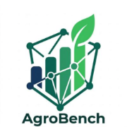

AgroBenchO produtor contribui o custo da safra, vê de graça como se compara à microrregião e recebe USDC. Quem paga o agregado é banco, seguro e cooperativa.
Não existe um “quanto o vizinho está pagando” acessível. Cada um compra insumo isolado — sem saber se o preço é justo na sua região.
Crédito e seguro agrícola saem de safras passadas, autodeclaração e números públicos. Falta custo e produtividade da safra, na microrregião.
Registra o custo da safra cifrado. Vê a média da microrregião. Recebe USDC por ter alimentado o agregado — sem seed phrase e sem pagar gas.
Banco, seguradora e cooperativa assinam o painel para precificar crédito e seguro com custo e produtividade da safra — não com estimativa histórica.
| Item | Você | Região | Δ |
|---|---|---|---|
| Adubo | R$ 1.500/ha | R$ 1.200/ha | +25% |
| Defensivos | R$ 820/ha | R$ 850/ha | −4% |
| Produtividade | 72 sc/ha | 68,5 sc/ha | +5% |
O produtor leva o +25% ao fornecedor. Argumento de mesa, não estimativa de safra passada.
A instituição vê o mesmo agregado, completo. Custo e produtividade por região × cultura — o que precifica crédito e seguro.
Conta no app, não cripto na cara. Wallet no aparelho, gas patrocinado. O produtor vê o +25% — não a seed.
O produtor registra no app. Wallet no aparelho, sem seed phrase.
O hash do dado vai on-chain antes do envio. Não dá para escolher o número depois.
O custo cifrado entra no agregado da microrregião. O valor individual não vira público.
Compara de graça. Recompensa na wallet — visível no explorer.
Assina o agregado. A receita do desenho volta a quem contribuiu.
Custo e produtividade regional para crédito e seguro agrícola. Categoria que o produto endereça — sem volume de receita inventado.
Recorte geográfico: bancos, seguradoras e cooperativas que já originam risco agrícola. Hipótese de comprador, não pipeline.
Hipótese explícita: cooperativas e bancos do RS como primeiro canal — cobertura por cultura na microrregião.
Estimativa oficial de safra. Nacional e estadual — pouco granular por insumo, na microrregião, neste ciclo.
Preço de commodity. Não é o custo privado do adubo que o produtor pagou na sua região.
Já têm o associado e já originam crédito. O dado do sócio raramente vira mercado — nem incentivo para quem contribui.
Custo da safra, por região, com commit on-chain e recompensa em USDC. Não “dado que ninguém compilou” — recorte que os três acima não vendem.
Backend, interface e design da demo. Go-to-market = cooperativas da microrregião — pedido, não contrato.
API Go, Postgres e adapter Solana Devnet.
App Vue: produtor, instituição e admin.
Design e interface da demo de banca.
Já têm o associado e já originam crédito. Recrutam o produtor e compram o agregado — sem fingir contrato assinado.
A instituição. O produtor entra de graça. USDC no 1º ciclo; painel só após 3 ciclos seguidos. Cobertura na microrregião antes de vender o relatório.
O programa Anchor está no disco. Próximo passo operacional: deploy. Há um hash CPF → wallet, sujeito à LGPD — não vendemos “zero exposição”.
Cinco minutos sem pergunta. O número do adubo já está no app. A chain está na Devnet. O piloto ainda é o pedido — não um contrato.
Commit do produtor e USDC no explorer — Memo + transfer da treasury, hoje.
Mentoria no UPF Parque para o primeiro ciclo com cooperativa da microrregião.
Abrir a porta com uma cooperativa local. É o ask — ainda não está assinado.